Deterministic Linear Time for Maximal Poisson-Disk Sampling using Chocks without Rejection or Approximation
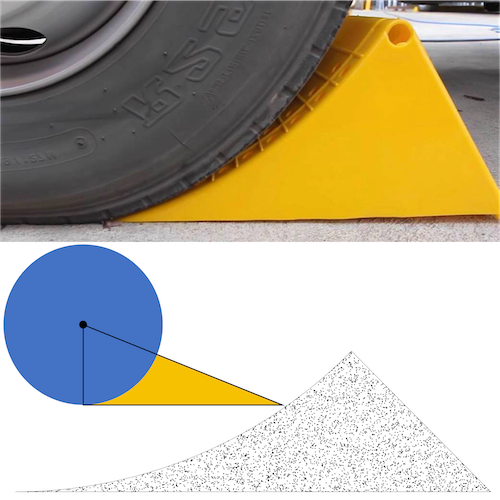
Scott A. Mitchell
Symposium on Geometry Processing 2022
Eurographics Journal 41-5, proceedings of Computer Graphics Forum presentation powerpoint and video and presentation-errata
Not so HOT Triangulations
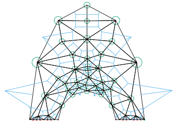
Scott A. Mitchell, Patrick Knupp, Sarah C. Mackay, and Michael F. Deakin
Extended journal version
Computer-Aided Design, special issue
bibtex
Conference version
Proceedings on zendo and IMR website
presentation pptx pdf
bibtex
Best paper award International Meshing Roundtable 2021
Also USNCCM talk 2021
SAGE Intrusion Detection System:
Sensitivity Analysis Guided Explainability for Machine Learning
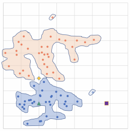
Michael R. Smith, Erin C.S. Acquesta, Arlo Ames, Alycia N. Carey, Christopher R. Cuellar, Richard V. Field, Trevor Maxfield, Scott Mitchell, Blake Moss, Elizabeth Morris, Megan Nyre-Yu, Ahmad Rushdi, Mallory Stites, Charles Smutz, and Xin Zhou
SAND2021-11358, LDRD tech report, 2021
Pdf from OSTI
doi: 10.2172/1820253
bibtex
Incremental Interval Assignment by Integer Linear Algebra
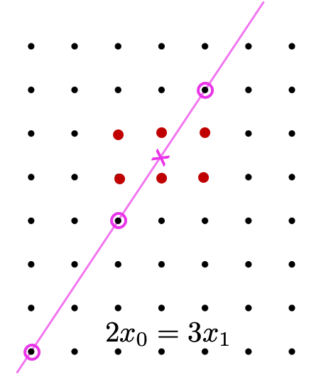
Scott A. Mitchell
Extended journal version “with Improvements”
Computer-Aided Design, special issue
bibtex
Conference version
International Meshing Roundtable 2021
Proceedings on zendo and IMR website
presentation pptx and pdf
bibtex
public source code on github
Incremental Interval Assignment for Mesh Scaling
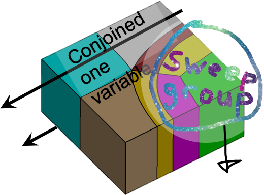
Scott A. Mitchell
Research abstract, International Meshing Roundtable 2019
presentation pptx and pdf
paper pdf
bibtex
Statistical Inference Over Persistent Homology Predicts Fluid Flow in Porous Media

Chul Moon, Scott A. Mitchell, Jason E. Heath, and Matthew Andrew
Water Resources Research 2019
Supporting Information
paper pdf
bibtex
Persistent Homology Fingerprinting of Microstructural Controls on Larger-scale Fluid Flow in Porous Media

Chul Moon, Scott A. Mitchell, Nickolas Callor, Thomas A. Dewers, Jason E. Heath, Hongkyu Yoon, and Gregory R. Conner
AGU Fall Meeting Abstracts, 2017
bibtex
Statistical Inference for Porous Materials Using Persistent Homology
Chul Moon, Scott A. Mitchell, and Jason E. Heath
Spoke-Darts for High-Dimensional Blue-Noise Sampling
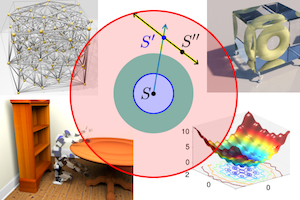
Scott A. Mitchell, Mohamed S. Ebeida, Muhammad A. Awad, Chonhyon Park, Anjul Patney, Ahmad A. Rushdi,Laura P. Swiler, Dinesh Manocha, and Li-Yi Wei
ACM Trans. Graph., and SIGGRAPH 2018
arxiv
public source code on github
SIGGRAPH fast-forward 30-second movie
SIGGRAPH talk slides
paper pdf
bibtex
Sphere Sampling for Meshing & Reconstruction with Delaunay & Voronoi Cells

Scott A. Mitchell (speaker)
overview talk
presentation pptx
GIDS workshop in honor of Prof. Chandrajit Bajaj’s 60th birthday
14 Sept 2018
Fast Approximate Union Volume in High Dimensions with Line Samples
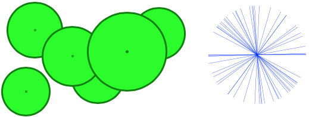
Scott A. Mitchell, Muhammad A. Awad, Mohamed S. Ebeida, Laura P. Swiler
Tech report SAND2018-8684, 2018
bibtex
Balloon Darts:
Fast Approximate Union Volume in High Dimensions with Line Samples
Talk in SIAM conference on Geometric & Physical Modeling, GD/SPM 2013
Voronoi Crust
This series is about my efforts to understand the theoretical and practical aspects of decomposition by Voronoi cells, using the medial axis of a union of balls. This is called the Voronoi crust generally, or “VoroCrust” for a particular implementation.
VoroCrust: Voronoi Meshing Without Clipping
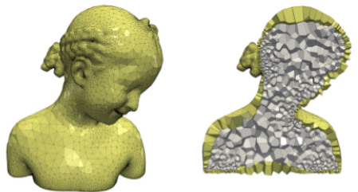
Ahmed Abdelkader, Chandrajit L. Bajaj, Mohamed S. Ebeida, Ahmed H. Mahmoud, Scott A. Mitchell, John D. Owens and Ahmad A. Rushdi
ACM Trans. Graph. 39, 3, Article 23, May 2020. https://doi.org/10.1145/3337680
bibtex
arXiv:1902.08767 bibtex
Sampling Conditions for Conforming Voronoi Meshing by the VoroCrust Algorithm

Ahmed Abdelkader, Chandrajit L. Bajaj, Mohamed S. Ebeida, Ahmed H. Mahmoud, Scott A. Mitchell, John D. Owens and Ahmad A. Rushdi
34th International Symposium on Computational Geometry (SoCG 2018)
proceedings pdf, and local pdf and UC Davis mirror
bibtex
Extended version with proof appendices
arxiv and local mirror
bibtex-arxiv
VoroCrust Illustrated: Theory and Challenges
34th International Symposium on Computational Geometry (SoCG 2018) Video Review
multimedia presentation related to the above papers
abstract
bibtex
Sampling Conditions for Clipping-free Voronoi Meshing by the VoroCrust Algorithm

Scott A. Mitchell, Ahmed Abdelkader, Ahmad Rushdi, Mohamed Ebeida, Ahmed Mahmoud, John Owens, and Chandrajit Bajaj
Fall Workshop on Computational Geometry, November 2017.
Talk given by Ahmed Abdelkader: his website and talk slides.
Workshop proceedings and local copy of abstract, and talk slides.
bibtex
A Seed Placement Strategy for Conforming Voronoi Meshing
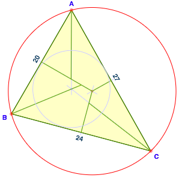
Ahmed Abdelkader, Chandrajit L. Bajaj, Mohamed S. Ebeida, and Scott A. Mitchell
29th Canadian Conference on Computational Geometry CCCG2017
slides contain many helpful figures not in the paper.
YouTube video of Scott A. Mitchell giving the actual conference talk.
paper pdf
bibtex
VoroCrust: Simultaneous Surface Reconstruction and Volume Meshing with Voronoi cells
Scott A. Mitchell’s talk at POEMS 2015
USNCCM 2015, TS11 MS714 Voronoi Dual Meshing and Simulation, Chair: Scott Mitchell
VoroCrust Geometry: 3D polyhedral meshing with true Voronoi cells conforming to prescribed surface points.
abstract
ASCR Appied Math PI Meeting posters. PI’s Scott A. Mitchell and Patrick M. Knupp
Unstructured Primal-Dual Mesh Improvement and Generation
2017 ASCR Applied Mathematics Principal Investigators Meeting, September 2017
4’x6′ poster pdf pptx
abstract,
blitz 1-slide summary pdf pptx, and bibtex
Primal-Dual Mesh Optimization with Mathematical Foundations
2019 ASCR Applied Mathematics Principal Investigators (PI) Meeting, January 2019
4’x6′ poster pdf pptx, abstract, blitz 1-slide summary pdf pptx, and bibtex
Meshes Optimized for Discrete Exterior Calculus (DEC)
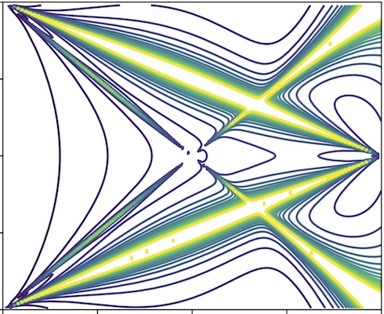
Sarah C. Mousley, Michael Deakin, Patrick Knupp, and Scott A. Mitchell
CCR Summer Proceedings, 2017
Page 88+ of entire summer-proceedings pdf
just Sarah’s chapter pdf
bibtex
Remote Sensing
Related remote sensing problems: picking which satellite images to take; where to focus within them; and when to schedule them.
Footprint Placement for Mosaic Imaging by Sampling and Optimization
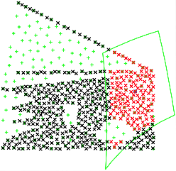
Scott A. Mitchell, Christopher G. Valicka, Stephen Rowe, and Simon X. Zou
The 28th International Conference on Automated Planning and Scheduling, 2018
Nonoverlapping Grid-aligned Rectangle Placement for High Value Areas
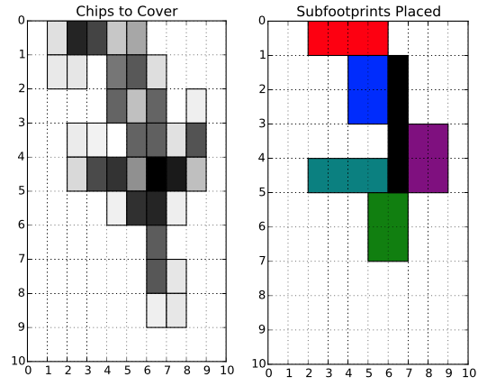
Stephen Rowe, Christopher G. Valicka, Scott A. Mitchell and Simon X. Zou
29th Canadian Conference on Computational Geometry CCCG2017
slides contain many helpful figures not in the paper.
YouTube video of Scott A. Mitchell giving the actual conference talk.
paper pdf
bibtex
Dynamic Multi-Sensor Multi-Mission Optimal Planning Tool
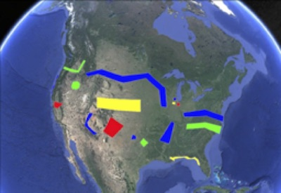
Christopher G. Valicka, Stephen Rowe, Simon X. Zou, Scott A. Mitchell, William R. Irelan, Eric L. Pollard, Deanna Garcia, Gabriel Hackebeil, Andrea Staid, Mark D. Rintoul, Jean-Paul Watson, William E. Hart, Sivakumar Rathinam and Lewis Ntaimo
LDRD project final report pdf, 2016
bibtex
Mixed-Integer Formulations for Constellation Scheduling
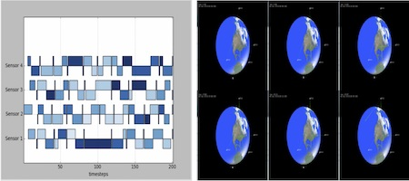
Christopher G. Valicka, William E. Hart, M. D. Rintoul, Scott A. Mitchell, Eric L. Pollard, Simon X. Zou, and Stephen Rowe
paper (local mirror) and poster (local mirror)
Advanced Maui Optical and Space Surveillance Technologies Conference, 2015
bibtex
A Constrained Resampling Strategy for Mesh Improvement
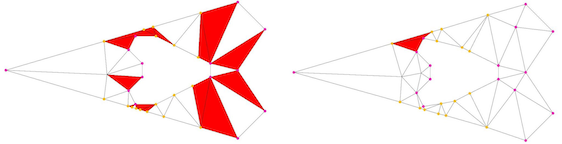
Ahmed Abdelkader, Ahmed H. Mahmoud, Ahmad A. Rushdi, Scott A. Mitchell, John D. Owens, and Mohamed S. Ebeida
Geometry Processing SGP2017, doi 10.1111/cgf.13256
paper pdf
bibtex
Ahmed Hassen Mahmoud’s open source code
https://github.com/Ahdhn/MeshImp
All-Hex Meshing of Multiple-Region Domains without Cleanup

Muhammad A. Awad, Ahmad A. Rushdi, Misarah A. Abbas, Scott A. Mitchell, Ahmed H. Mahmoud, Chandrajit L. Bajaj, and Mohamed S. Ebeida
paper pdf
Proceedings 25th International Meshing Roundtable (IMR25)
bibtex
Visco-TTI-Elastic FWI using Discontinuous Galerkin
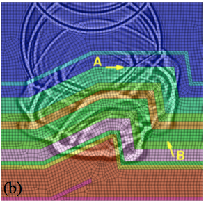
Curtis C. Ober, Thomas M. Smith, James R. Overfelt, S. Scott Collis, Gregory J. von Winckel, Bart G. van Bloemen Waanders, Nathan J. Downey, Scott A. Mitchell, Stephen D. Bond, David F. Aldridge, and Jerome R. Krebs
Society of Exploration Geophysicists, SEG Technical Program Expanded Abstracts, 2016
paper pdf
errata
bibtex
Curve Reconstruction with Many Fewer Samples
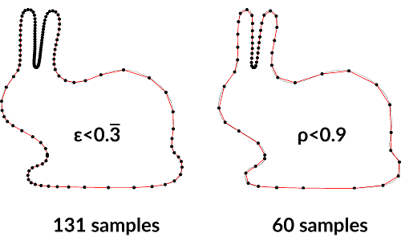
Stefan Ohrhallinger, Scott A. Mitchell and Michael Wimmer
Computer Graphics Forum, SGP Symposium on Geometry Processing, 2016
paper pdf
bibtex
Disk Density Tuning of a Maximal Random Packing
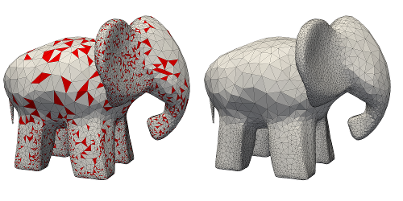
Mohamed S. Ebeida, Ahmad A. Rushdi, Muhammad A. Awad, Ahmed H. Mahmoud, Dong-Ming Yan,
Shawn A. English, John D. Owens, Chandrajit L. Bajaj and Scott A. Mitchell
Computer Graphics Forum, SGP Symposium on Geometry Processing, 2016
paper pdf
bibtex
POF-Darts: Geometric Adaptive Sampling for Probability of Failure
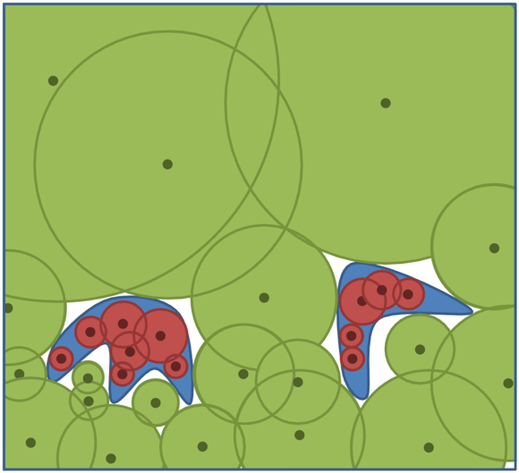
Mohamed S. Ebeida, Scott A. Mitchell, Laura P. Swiler, Vicente J. Romero, and Ahmad A. Rushdi
Reliability Engineering & System Safety
doi
paper pdf
bibtex
A Set of Test Problems and Results in Assessing Method Performance
for Calculating Low Probabilities of Failure

Vicente Romero, Laura Swiler, Mohamed Ebeida, and Scott Mitchell
AIAA SciTech 2016 / 18th AIAA Non-Deterministic Approaches Conference
doi
slides
paper pdf
bibtex
The conference slides include assessment of our POF-Darts technique, but the paper doesn’t.
Robust All-Quad Meshing of Domains with Connected Regions

Ahmad A. Rushdi, Scott A. Mitchell, Chandrajit L. Bajaj and Mohamed S. Ebeida
24th International Meshing Roundtable (2015)
online abstract
IMR Proceedings in Procedia Engineering.
doi:10.1016/j.proeng.2015.10.125
paper pdf
bibtex
Extended journal version of selected papers from the conference:
All-Quad Meshing without Cleanup, 2016
Publisher’s site
Ahmad A. Rushdi, Scott A. Mitchell, Ahmed H. Mahmoud, Chandrajit C. Bajaj, and Mohamed S. Ebeida
dx.doi.org/10.1016/j.cad.2016.07.009
bibtex
Efficient Probability of Failure Calculations for QMU using Computational Geometry
LDRD 13-0144 Final Report

Scott A. Mitchell, Mohamed S. Ebeida, Vicente J. Romero, Laura P. Swiler, Ahmad A. Rushdi, and Ahmed Abdelkader
This is our three-year LDRD project final report summarizing our work. It introduces POF-Darts.
Tech report pdf
bibtex
Exercises in High-Dimensional Sampling: Maximal Poisson-disk Sampling and k-d Darts

Mohamed S. Ebeida, Scott A. Mitchell, Anjul Patney, Andrew A. Davidson, Stanley Tzeng, Muhammad A. Awad, Ahmed H. Mahmoud, and John D. Owens
Definitive version from SpringerLink.
Chapter in the book “Topological and Statistical Methods for Complex Data“
escholarship link
publication pdf
bibtex
Delaunay Quadrangulation by Two-coloring Vertices
Scott A. Mitchell, Mohammed A. Mohammed, Ahmed H. Mahmoud and Mohamed S. Ebeida
23rd IMR proceedings and online abstract
Journal pdf in
Procedia Engineering, Science Direct
Talk slides in pptx and pdf
Paper pdf
Extended paper with quad-quality proofs pdf
bibtex
Steiner Point Reduction in Planar Delaunay Meshes
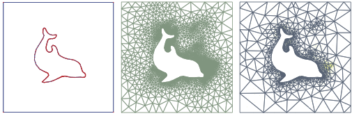
Ahmed Abdelkader, Scott A. Mitchell and Mohamed S. Ebeida
Symposium on Computational Geometry, Young Researchers Forum
paper pdf
bibtex
Improved Poisson-disk Sampling for Meshing applications
talk abstract
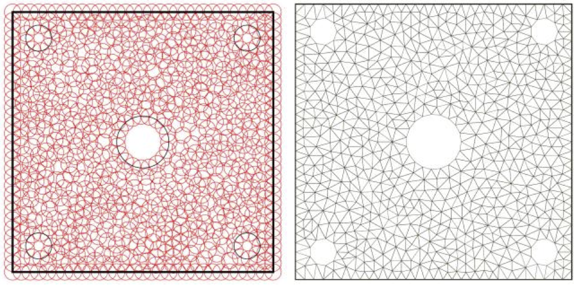
Mohamed S. Ebeida and Scott A. Mitchell
Proceedings of the 11th World Congress on Computational Mechanics (WCCM XI)
abstract pdf
bibtex
Improving Spatial Coverage while Preserving the Blue Noise of Point Sets
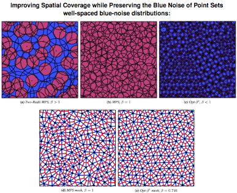
Mohamed S. Ebeida, Muhammad A. Awad, Xiaoyin Ge, Ahmed H. Mahmoud, Scott A. Mitchell, Patrick M. Knupp and Li-Yi Wei
Computer-Aided Design special issue, proceedings of 2013 SIAM Conference on Geometric and Physical Modeling, SIAM GD/SPM13.
doi
Talk slides in pptx and pdf.
Reposting of pdf on author website with permission from Elsevier as U.S. government funded work.
bibtex
Simple and Fast Interval Assignment Using Nonlinear and Piecewise Linear Objectives

Scott A. Mitchell
IMR International Meshing Roundtable 2013
Springer online proceedings
Talk slides in pptx and pdf.
paper pdf
bibtex
Sifted Disks
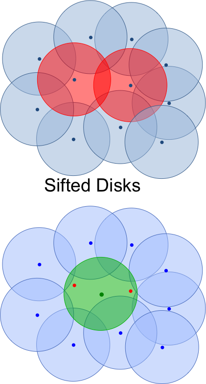
Mohamed S. Ebeida, Ahmed H. Mahmoud, Muhammad A. Awad, Mohammed A. Mohammed, Scott A. Mitchell, Alexander Rand, and John D. Owens
Eurographics 2013
Definitive versions from Wiley and
Computer Graphics Forum EG 2013 Proceedings,
sites Eurographics Digital Library and Wiley.
Talk slides in big pptx (non-portable) and small pptx and small pdf.
paper pdf
bibtex
k-d Darts: Sampling by k-Dimensional Flat Searches

Mohamed S. Ebeida, Anjul Patney, Scott A. Mitchell, Keith R. Dalbey, Andrew A. Davidson, and John D. Owens
Transactions on Graphics, vol. 33, no. 1, 2014.
doi 10.1145/2522528
escholarship link
paper pdf
bibtex
SIAM UQ14 minisymposium
MS17 Characterizing Sample Distribution Properties and their Impact on Experimental Design
talk pptx slides and pdf slides.
Talk at UT Austin slides
Older arxiv version: arXiv:1302.3917 [cs.GR] and local mirror and bibtex.
Variable Radii Poisson-Disk Sampling
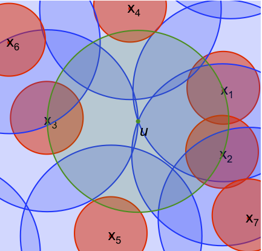
Scott A. Mitchell, Alexander Rand, Mohamed S. Ebeida and Chadrajit Bajaj
In proceedings of
24th Canadian Conference on Computational Geometry 2012
Just-this-paper downloads: faster local mirror print and online; conference site print and online. The print version is 6-pages in black and white.
The online version is in color with better figures and an appendix with proofs and experiments. Both versions are part of the official CCCG proceedings.
dblp CCCG 2012 proceedings and dblp bibtex
talk slides pptx and keynote and pdf — preview slide pdf and pptx .
bibtex-print and bibtex-online
I also described this spatial statistics open problem of characterizing the spectrum of Poisson-disk packings, and Delaunay Refinement output, and defining an ideal spectrum for computer graphics. I think the 2013 paper Blue Noise Sampling with Controlled Aliasing by Heck, Schlomer, and Deussen solves a lot of the open problem, by allowing you to define a spectrum, and then their algorithm finds a point set achieving it.
CCR Summer Seminar Series talks
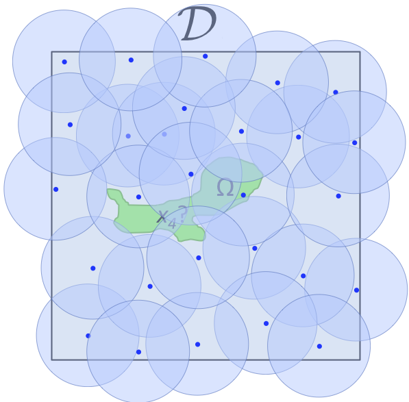
Well-Spaced Random Point Sets for Sampling and Meshing
Scott A. Mitchell
2013 CERI Summer Seminar Series
Overview talk to Sandia summer students interns.
talk slides in pptx
Download: [PDF]
Separated-Yet-Dense Random Point Clouds for Meshing and More
Scott A. Mitchell
2012 CSRI Summer Seminar Series
Overview talk to Sandia summer students interns.
Abstract, talk slides in pptx and pdf, pptx is better because of animations.
Download: [PDF]
High-Quality Parallel Depth-of-Field Using Line Samples
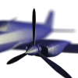
Stanley Tzeng, Anjul Patney, Andrew Davidson, Mohamed S. Ebeida, Scott A. Mitchell and John D. Owens
High Performance Graphics 2012
IDAV link and HPG slides and ACM Portal
The definitive version in the proceedings is available at
Eurographics Digital Library and Wiley.
bibtex
Download: [PDF]
“Simple MPS”
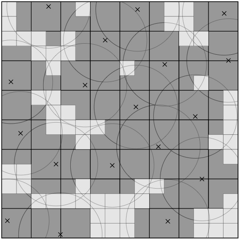
A Simple Algorithm for Maximal Poisson-Disk Sampling in High Dimensions, version with appendix.
Mohamed S. Ebeida, Scott A. Mitchell, Anjul Patney, Andrew A. Davidson and John D. Owens
Eurographics 2012
Definitive versions from Wiley and Computer Graphics Forum EG 2012 Proceedings, sites Eurographics Digital Library and Wiley.
Talk slides in pptx and pdf
paper pdf
bibtex
SIAM UQ12 Minisymposium on Random Points
Scott A. Mitchell organized the minisymposium Ensembles of Random Points for Uncertainty Quantification and gave the talk Random Poisson-Disk Samples and Meshes. In SIAM UQ12, April 2012.
Uniform Random Voronoi Meshes
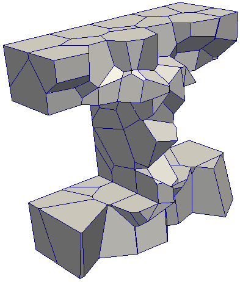
Mohamed S. Ebeida and Scott A. Mitchell
20th International Meshing Roundtable and its proceedings, Oct 2011
Talk Slides in pptx and pdf. The pptx is better because of the animations on slides 3, 9, and 12.
bibtex
Download: [PDF]
Random Meshes for Carbon Sequestration
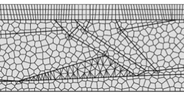
Mohamed S. Ebeida, Scott A. Mitchell, Patrick M. Knupp, Vitus J. Leung, Joseph E. Bishop, Mario J. Martinez, Anjul Patney, Andrew A. Davidson, and John D. Owens
Poster 20th International Meshing Roundtable and its proceedings, Oct 2011
bibtex
Download: [PDF]
Flexible Approximate Counting
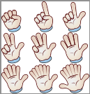
Scott A. Mitchell and David M. Day,
IDEAS2011, 15th International Database Engineering & Applications Symposium
2011
Talk Slides
bibtex
Download: [PDF]
Efficient and Good Delaunay Meshes from Random Points
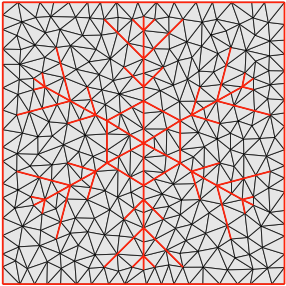
Mohamed S. Ebeida, Scott A. Mitchell, Andrew A. Davidson, Anjul Patney, Patrick M. Knupp, and John D. Owens
Reposting on author website with permission from Elsevier
doi:10.1016/j.cad.2011.08.012
sciencedirect article
Computer-Aided Design special issue for proceedings of SIAM Conference on Geometric and Physical Modeling (GD/SPM11), 2011.
Talk Slides bibtex
Download: [PDF]
Efficient Maximal Poisson-Disk Sampling
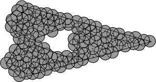
Mohamed S. Ebeida, Anjul Patney, Scott A. Mitchell, Andrew Davidson, Patrick M. Knupp, and John D. Owens
SIGGRAPH 2011.
Talk Slides in pptx and pdf.
The pptx is better because of the animations.
doi
bibtex
Download: [PDF]
The above 2011 paper claims that it describes the first algorithm with a particular runtime and memory guarantee; but in fact the following 2006 paper has similar bounds. An algorithmic difference between these two is how the uncovered region is tracked: ours is grid based, and Jones is Voronoi based.
Jones, Thouis R. “Efficient generation of Poisson-disk sampling patterns.” Journal of Graphics, GPU, & Game Tools 11.2 (2006): 27-36. DOI 10.1080/2151237X.2006.10129217
Geometric Comparison of Popular Mixture Model Distances

Scott A. Mitchell
Article in Journal of Modern Mathematics Frontier Vol. 1 Iss. 4, December 2012
paper pdf
bibtex-journal.
Foundations of Topological Analysis workshop in VizWeek 2010 short talk
Sandia tech report SAND2010-6286C pdf
bibtex-techreport
Long seminar talk slides in pptx and pdf. The pptx has animations.
Matlab demo files in zip or tar to go with the talk. Play seminar45.m to view the animations that go with the with the talk, as prompted on slides.
Multifractal Dimensions Using Maximal Simplices and Python Extensions to TEVA-SPOT

Jesse Berwald, David M. Day, Scott A. Mitchell, and Afra Zomorodian
CSRI Summer Proceedings 2010, pages 178-195, SAND report SAND2010-8783P.
bibtex
Afra Zomorodian spent part of his sabbatical, and Jesse Berwald was a summer student, with me at CSRI in 2010.
We used topology to analyze data from optimization simulations.
Distinguishing Documents, LDRD 149045 Final Report
Scott A. Mitchell
SAND report SAND2010-6678, September 2010.
Download: [PDF]
Statistical Analysis of HPC Alerts and Developments in Root Cause Analysis
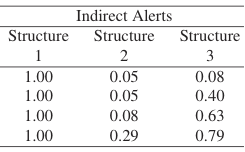
Joel M. Vaughan, Jon R. Stearley, Scott A. Mitchell, and George Michailidis
CSRI Summer Proceedings 2010, pages 331-342, SAND report SAND2010-8783P.
bibtex
Joel Vaughan was a summer student with me at CSRI in 2010 and 2009, and a PhD. student of George Michailidis.
Root Cause Analysis of Errors for High Performance Computing

Joel M. Vaughan and Jon R. Stearley and Scott A. Mitchell and George Michailidis
CSRI Summer Proceedings 2009, pages 177-186, SAND report SAND2009-3083P.
bibtex
Network inference: we used statistics over indirect graph data to determine the root cause of supercomputer faults.
Summary of the CSRI Workshop on Combinatorial Algebraic Topology (CAT):
Software, Applications & Algorithms
Janine C. Bennett, David M. Day, Scott A. Mitchell,
SAND report SAND2009-7777, 2009.
Scott A. Mitchell and Shawn Martin organized and chaired this stand-alone CAT workshop.
Download: [PDF]
The RatNest Routing Protocol for Ad-Hoc Circuits Over Fixed Radio Networks
Scott A. Mitchell,
SAND report SAND2009-1895C, 2009.
Download: [PDF]
A Large Scale Enterprise Level Systems of Systems Simulation Tool
Gio Kao and Steven Handy,
INFORMS October 2009.
CoreSim is a component of SoSAT; presentation acknowledges Scott A. Mitchell and other CoreSim developers.
Download: [PDF]
CoreSim / Logistics and System-of-Systems
Scott A. Mitchell
CCIM impact document, April 2009.
Download: [PDF]
R&D for Computational Cognitive and Social Models: Foundations for Model Evaluation through Verification and Validation (Final LDRD Report)
McNamara, Laura A., Timothy G. Trucano, George A. Backus, Scott A. Mitchell,
SAND Report SAND2008-6453, September 2008.
Download: [PDF]
Distance-Avoiding Sets for Extremely Low-Bandwidth Authentication
Michael J. Collins and Scott A. Mitchel
In Proceedings of the 5th international Conference on Sequences and their Applications (Lexington, KY, USA, September 14 – 18, 2008). S. W. Golomb, M. G. Parker, A. Pott, and A. Winterhof, Eds. Lecture Notes In Computer Science, vol. 5203. Springer-Verlag, Berlin, Heidelberg, 230-238.
DOI
Int’l Conf. on Sequences and Their Applications, SETA 2008 webpage, and online proceedings.
Also SAND report SAND2007-4543C.
Download: [PDF]
LDRD 102610 Final Report New Processes for Innovative Microsystems Engineering with Predictive Simulation
Scott A. Mitchell, Ann E. Mattsson, and Stephen W. Thomas,
SAND report SAND2007-4888, August 2007.